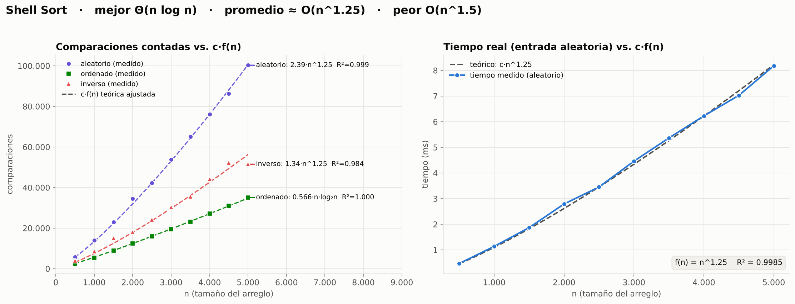
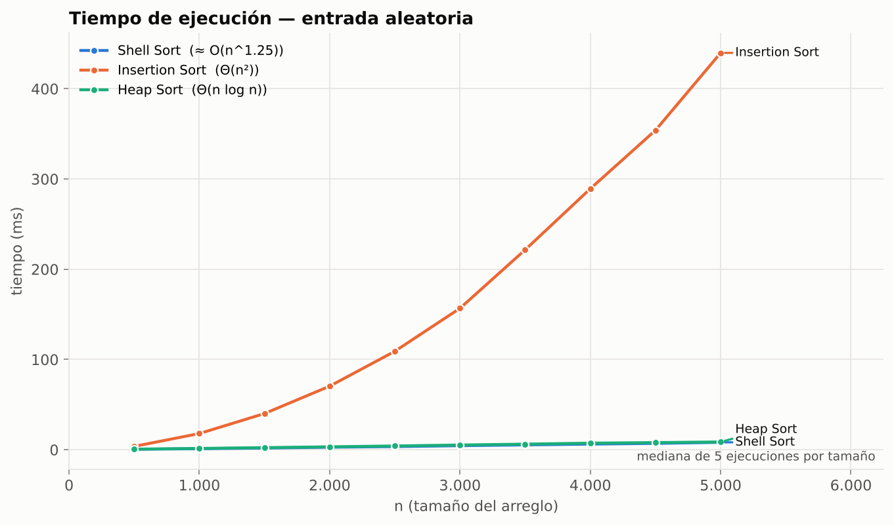

Producto didáctico y comparativo: Shell Sort frente a Insertion Sort y Heap Sort, con código en Python, pruebas de calidad y gráficas generadas por el programa.
Autor
Docente
Institución
Fecha
Definición
¿Qué es Shell Sort?
Es un algoritmo de ordenamiento por comparación que mejora a Insertion Sort: en vez de comparar solo vecinos, compara elementos separados por un salto o gap que se va reduciendo hasta 1.
Insertion Sort es lento porque cada elemento avanza una sola posición por comparación. Con gaps grandes, los valores viajan lejos en pocos pasos; cuando el gap llega a 1 el arreglo ya está casi ordenado y la última pasada es rápida.
2 · Ordenar con salto hInserción entre elementos separados h posiciones.
3 · Reducir el gaph ← (h − 1) / 3
4 · Terminar con h = 1Un Insertion Sort normal sobre datos casi ordenados.
gap h = 4 · cuatro sublistas
Las barras del mismo color forman una sublista (posiciones separadas por 4). Cada sublista se ordena por inserción.
Shell Sort · Análisis de Algoritmos
Contexto
Origen e historia
Donald L. Shell, julio de 1959
Publicó “A High-Speed Sorting Procedure” en Communications of the ACM, vol. 2, n.º 7. Fue de los primeros algoritmos en bajar del costo O(n²) de los métodos simples, y el nombre del método es el apellido de su autor.
Lo que lo hace especial
Su rendimiento depende de la secuencia de gaps. Más de 60 años después todavía no se conoce la secuencia óptima: es un problema abierto.
Arreglo de 16 valores. Gaps de Knuth para n = 16: 13, 4, 1. Pulsa Reproducir.
Amarillo = comparando · azul marino = intercambio · mismo color = misma sublista
Algoritmo base
Pseudocódigo de Shell Sort
SHELLSORT(A, n) h ← 1mientras h < n / 3 hacer▷ gap inicial h ← 3·h + 1mientras h ≥ 1 hacerpara i ← h hasta n − 1 hacer temp ← A[i] j ← imientras j ≥ h y A[j − h] > temp hacer A[j] ← A[j − h] ▷ salta h lugares j ← j − h A[j] ← temp h ← (h − 1) / 3 ▷ gap menorretornar A
Líneas 2–4
Calculan el gap más grande de la secuencia de Knuth que cabe en el arreglo.
Líneas 6–12
Son un Insertion Sort, pero los elementos se comparan y se mueven de h en h.
Línea 13
Reduce el gap: 40 → 13 → 4 → 1. Con h = 1 termina como Insertion Sort.
Código documentado: algoritmos/shell_sort.py
Características y rendimiento
Shell Sort en notación Big O
n = cantidad de elementos · Con la secuencia de Knuth · Cada pasada de gap h hace al menos n − h comparaciones.
Mejor casoΘ(n log n)
Datos ya ordenados: cada pasada solo compara, no mueve nada.
Caso promedio≈ O(n1.25)
Datos aleatorios. Valor empírico; el programa lo comprueba con R² ≈ 0.999.
Peor casoO(n1.5)
Cota demostrada para los gaps de Knuth (con los gaps de Shell sería O(n²)).
Memoria extra O(1)Ordena dentro del mismo arreglo (in-place).
Estable: NoUn gap grande puede saltar un valor por encima de su gemelo.
Adaptativo: SíSi los datos vienen casi ordenados trabaja mucho menos.
Por comparaciónSolo usa “¿a > b?”; ordena números, texto o lo que se pueda comparar.
Shell Sort · Análisis de Algoritmos
Comparación n.º 1 · el “papá” de Shell Sort
Insertion Sort
Por qué se compara
Shell Sort es un Insertion Sort con saltos: cuando el gap llega a 1 hace exactamente este algoritmo. Compararlos mide cuánto ganan los gaps.
Historia
Es la forma en que una persona ordena las cartas de una mano. Knuth registra que John Mauchly ya trató la inserción en 1946, en las conferencias de la Moore School sobre los primeros computadores.
Estable: SíConserva el orden de iguales.
Memoria O(1)In-place.
AdaptativoCasi lineal si viene casi ordenado.
MejorΘ(n)
PromedioΘ(n²)
PeorΘ(n²)
INSERTIONSORT(A, n)para i ← 1 hasta n − 1 hacer temp ← A[i]; j ← imientras j > 0 y A[j − 1] > temp hacer A[j] ← A[j − 1] ▷ avanza 1 lugar j ← j − 1 A[j] ← tempretornar A
Fórmulas exactas: n − 1 comparaciones (ordenado), ≈ n²/4 (aleatorio), n(n − 1)/2 (inverso). El programa las verifica.
Código documentado: algoritmos/insertion_sort.py
Comparación n.º 2 · el “rival” de Shell Sort
Heap Sort
Por qué se compara
Tiene el mismo perfil que Shell Sort (in-place, memoria O(1), no estable), pero garantiza Θ(n log n) en todos los casos gracias a un heap. ¿Gana la garantía o la sencillez?
Historia
J. W. J. Williams lo publicó en 1964 (Algorithm 232, CACM) junto con el heap binario. Ese mismo año Robert W. Floyd hizo que construir el heap costara solo O(n).
Estable: NoIgual que Shell Sort.
Memoria O(1)El heap vive en el arreglo.
No adaptativoOrdenado o no, cuesta lo mismo.
MejorΘ(n log n)
PromedioΘ(n log n)
PeorΘ(n log n)
Heap máximo: cada padre es mayor que sus hijos, así que el mayor siempre está en la raíz. En el arreglo, los hijos de i están en 2i + 1 y 2i + 2.
HEAPSORT(A, n)para i ← n/2 − 1 bajando hasta 0: HUNDIR(A, i, n)para fin ← n − 1 bajando hasta 1 hacer intercambiar A[0], A[fin] ▷ el mayor al finalHUNDIR(A, 0, fin) ▷ reparar el heap
Código documentado y pseudocódigo completo de HUNDIR: algoritmos/heap_sort.py
Comparación en vivo
Los tres, con los mismos datos
Cada tic del reloj = una comparación para cada algoritmo. Gana el que termine con menos comparaciones. 48 valores.
Shell Sort
0comp.
Insertion Sort
0comp.
Heap Sort
0comp.
Prueba “casi ordenada”: Insertion y Shell son adaptativos; Heap Sort no lo es
Calidad de software
Cada algoritmo se verifica por separado
16verificaciones por algoritmo en el programa
81pruebas unitarias con pytest
1.000arreglos aleatorios por algoritmo
Casos borde: vacío, 1 elemento, repetidos, todos iguales
Negativos, decimales y texto
La salida está ordenada
Es permutación: no pierde ni inventa valores
No modifica los datos originales
Comparaciones = fórmula del mejor caso
Heap: comparaciones ≤ 2·n·log₂n
Estabilidad igual a la documentada
Cada algoritmo tiene su propio archivo de pruebas (tests/test_shell_sort.py, test_insertion_sort.py, test_heap_sort.py) y su informe en resultados/calidad/.
$ python main.py calidad
■ Shell Sort — 16/16 verificaciones aprobadas
✔ Arreglo vacío ........... igual a sorted()
✔ Con valores repetidos ... igual a sorted()
✔ No modifica la entrada .. original intacta
✔ 1000 arreglos aleatorios 0 fallos
✔ Es permutación .......... 0 perdidos
✔ Mejor caso = fórmula .... exacto n=1…1000
✔ Estabilidad ............. no estable ✓
■ Insertion Sort — 16/16 aprobadas
■ Heap Sort — 16/16 aprobadas
$ python -m pytest
81 passedin 0.54s
Resultado general: ✔ TODO APROBADO
calidad/verificador.py · tests/
Representación temporal f(n)
Lo medido frente a c·f(n)

Gráficas generadas por analisis/graficas.py · python main.py graficas
Comparación de gráficas · rango aumentado
¿Quién gana y cuándo?

Todas las gráficas las genera el mismo programa
Resumen
Los tres algoritmos, lado a lado
Shell Sort
Insertion Sort
Heap Sort
Año · autor
1959 · D. L. Shell
1946 · (Mauchly)
1964 · J. W. J. Williams
Mejor caso
Θ(n log n)
Θ(n)
Θ(n log n)
Caso promedio
≈ O(n^1.25)
Θ(n²)
Θ(n log n)
Peor caso
O(n^1.5)
Θ(n²)
Θ(n log n)
Memoria extra
O(1)
O(1)
O(1)
Estable · adaptativo
No · Sí
Sí · Sí
No · No
Tiempo n = 5.000*
≈ 8 ms
≈ 440 ms
≈ 9 ms
Mejor para…
Arreglos medianos, código corto
Pocos datos o casi ordenados
Cuando se necesita garantía
* Mediana de 5 ejecuciones con entrada aleatoria en Python; depende del equipo.
Shell Sort · Análisis de Algoritmos
Cierre
Conclusiones
1
Una idea sencilla (comparar elementos lejanos primero) baja Insertion Sort de O(n²) a cerca de O(n1.25): ≈ 50 veces más rápido con 5.000 datos.
2
Las gráficas confirman Big O: los datos medidos se ajustan a c·f(n) con R² de 0.97 o más en los tres algoritmos.
3
Shell Sort y Heap Sort empatan en la práctica; Heap gana al crecer n y siempre tiene garantía Θ(n log n). Shell gana en sencillez.
4
En Shell Sort la secuencia de gaps lo es todo: Ciura hace ≈ 24 % menos comparaciones que la secuencia original de 1959.
No basta con que el resultado salga ordenado: también hay que medir tiempo, memoria y crecimiento.python main.py todo
Shell Sort · Análisis de Algoritmos
Bibliografía
Referencias
Shell, D. L. (1959). A high-speed sorting procedure. Communications of the ACM, 2(7), 30–32.
Williams, J. W. J. (1964). Algorithm 232: Heapsort. Communications of the ACM, 7(6), 347–348.
Floyd, R. W. (1964). Algorithm 245: Treesort 3. Communications of the ACM, 7(12), 701.
Knuth, D. E. (1998). The Art of Computer Programming, Vol. 3: Sorting and Searching (2.ª ed.). Addison-Wesley.
Ciura, M. (2001). Best increments for the average case of Shellsort. Fundamentals of Computation Theory, LNCS 2138, 106–117.
Cormen, T. H., Leiserson, C. E., Rivest, R. L. y Stein, C. (2022). Introduction to Algorithms (4.ª ed.). MIT Press.
Sedgewick, R. y Wayne, K. (2011). Algorithms (4.ª ed.). Addison-Wesley.
Repositorio: código, pruebas, gráficas y esta presentación